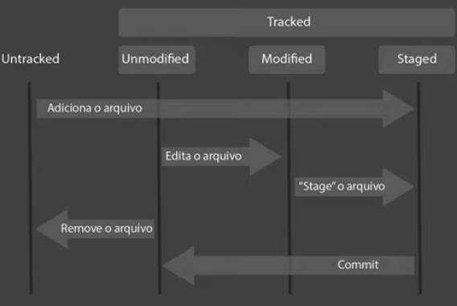

Quando usamos o comando "git init" é de fato inicializado o repositorio local do GIT.

=> Quando criamos o arquivo ele nasce como Untracked, apos o add, ele muda para Tracked
=> Ao editar o arquivo ele fica com estado de Modified
=> executando add nesse arquivo Modified ele passa para STAGED aguardando a ação de commit
=> Ao remover o arquivo ele volta para Untracked
=> O STAGED é a area que monta o pacote que vai ser o envelope do Commit
=> à partir do Commit, todos os arquivos voltam para Unmodified e ficam salvos no Commit (SnapShoot)